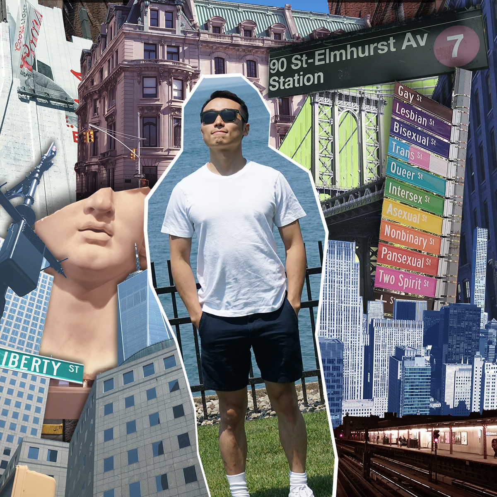

Today, after eighteen years, I can still clearly remember the scenery of the grassland.
In the summer, the surface of the dusty forest has been washed away by the gentle rain of the day,
full of green and green,
leaves sway in the wind of October,
and the slender clouds cling to the blue as if frozen.
Blue sky. It was so high. It looked like it was hurting when I gazed.
The wind blew through the grasslands, gently swaying her hair and going through the woods.
The leaves of the treetops made the sound of Sha Lasha,
and the sound of bark came from far away.
It is like a tiny, fuzzy call coming from the entrance of another world.
There is no sound other than this. No sounds were passed into our ears, and no one was met on the head.
Just seeing two bright red birds flew up from the grassland like a fear,
flying in the direction of the miscellaneous wood forest.
It is incredible to remember this thing. When I was actually in it, I barely noticed the scenery.
I didn't feel particularly impressed, and I didn't expect to remember the details of the scenery after 18 years...
But the first thing that came to my mind today was the scenery of the grassland.
The smell of the grass, the slightest wind, the ridges of the mountains, the snoring of the dogs,
those things first floated up. Very clear.
However, there are no people in the scenery.
No one is there. I am not here. Where have we disappeared? I think.
-- Murakami Haruki - Norwegian Wood
Beatles - Norwegian Wood
I am Hao, and I come from China.
Above is a section from my favourite novel. I like the soft atmosphere in it.
I like reading.
I like thinking as well.
I like art/film/music. Make my mind wide.
I like sports, too. Make my body strong.
What can I expect?

I processed a portrait in a collage style with the elements of New York City.
I am new here. I am exploring, learning, and I love the city.
My inspiration of this image is those wonderful things around me.
One is about Chinatown which presents my cultural background.
One is about the Gay street in Greenwich which shows the support of equality.
One is about the downtown World Trade Center area which presents the spirit of NYC.
And another one is about the subway station of 90th st. Elmhurst which shows where is my home.
There is one is about the big sculptural head which I saw in Metropolitan Museum.
In a certain period I was very obsessed with ancient Greece culture.
They people honor wisdom, knowledge, principle, and also beauty of human.
So for the special Illustrator work, I combine the sculpture image and my portrait, to remind myself of the great spirit.
| HOME | GALLERY |